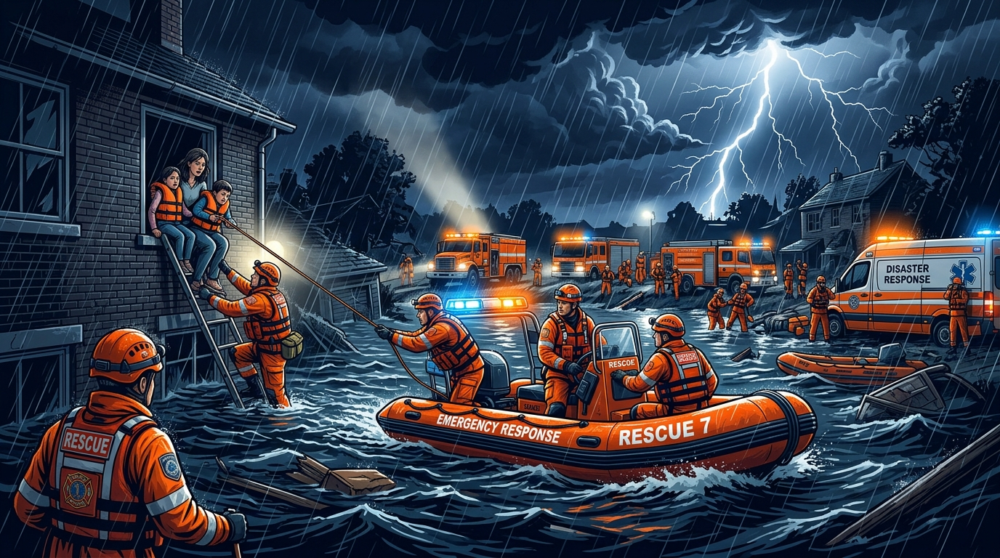

Flood & Flash Flood
Move immediately to elevated shelter. Turn off main electric breakers. Never walk, swim, or drive through flowing water.
View Flood Protocol →
SafeHorizon equips families, schools, and communities with life-saving protocols for natural catastrophes, severe weather events, acute medical emergencies, missing person alerts, and climate disruptions.
Immediate, time-critical action plans categorized for urgent response. Select your situation below for instant instructions.
Move immediately to elevated shelter. Turn off main electric breakers. Never walk, swim, or drive through flowing water.
View Flood Protocol →Secure windows, disconnect gas supplies, and evacuate to designated cyclone shelters before the landfall perimeter closes.
View Cyclone Protocol →Drop, Cover, and Hold On! Do not run outdoors during tremor shaking. Stay clear of glass windows and unsupported masonry.
View Earthquake Protocol →Crawl low under toxic smoke. Feel doors before opening. Evacuate immediately without gathering belongings and call 999.
View Fire Protocol →Secure the perimeter first. Never move casualties with suspected spinal trauma unless there is immediate fire hazard.
View Crash Protocol →Immediate steps for cardiac arrest, suspected stroke, severe arterial bleeding, unconsciousness, and pediatric choking.
View Medical Help →Golden Hour response steps for missing children, disoriented elderly persons with dementia, and disaster separation.
View Search Hub →Protecting vulnerable bodies from heatstroke, saline intrusion, lightning storms, and drought water scarcity.
View Climate Safety →Stay calm. Your safety is paramount. Follow our 3-step immediate safety rule before attempting any intervention:
Immediate dispatch for Ambulance, Fire Service Rescue, and Police nationwide.
Official flood levels, cyclone landfall warnings, and river erosion bulletins.
Missing, separated, stranded, or endangered child recovery dispatch.
Direct toxicological guidance for chemical exposure, snakebites, and ingestion.
During major floods, earthquakes, or storm surges, municipal rescue services may take up to 72 hours to reach isolated sectors. Assemble this kit today.

Rising global temperatures are amplifying flash floods in low-lying river deltas, triggering historic salinity intrusion in coastal aquifers, and multiplying prolonged 42°C+ heatwaves.
At SafeHorizon, we bridge the gap between global climate awareness and hyper-local community action. Discover how grassroots mangrove barriers, rainwater harvesting tanks, and urban tree canopies save vulnerable lives during seasonal superstorms.
SafeHorizon displays verified safety protocols only. We do not host speculative forecasts or unverified automated sensors; always consult the national meteorological department for official storm paths.
When disaster strikes or a loved one goes missing in crowded transit hubs, the first 60 minutes determine recovery outcomes.
SafeHorizon provides an open-access emergency registry, verified step-by-step reporting guidelines, and reunification shelter contacts to mobilize community volunteer search parties safely.